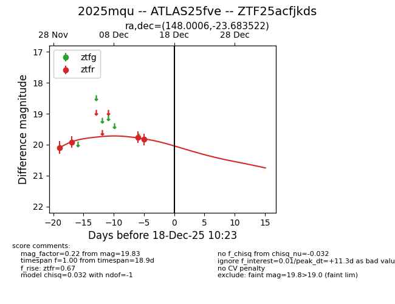
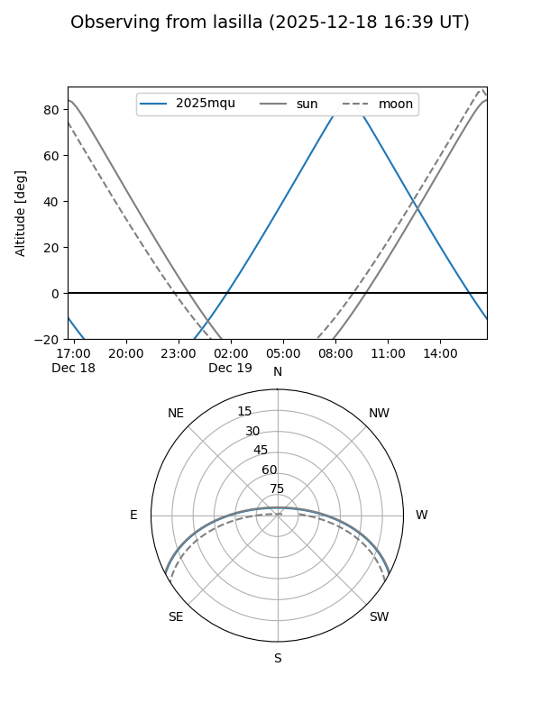
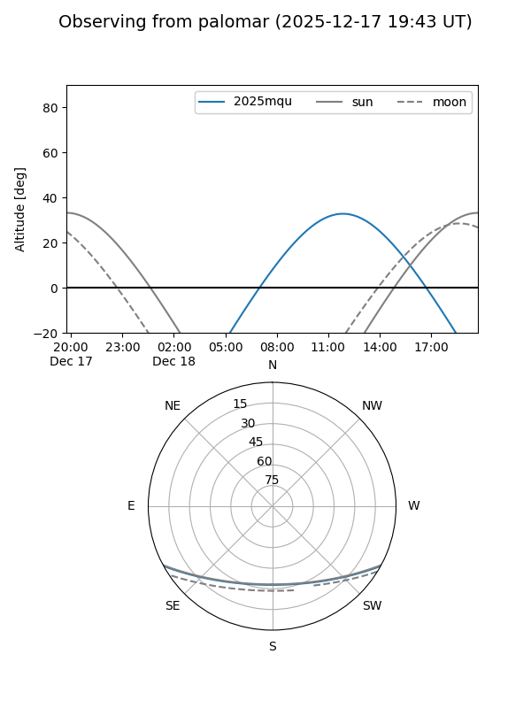

2025mqu
Target 2025mqu at 2025-12-18 11:18
Aliases and brokers:
FINK: fink-portal.org/ZTF25acfjkds
Lasair: lasair-ztf.lsst.ac.uk/objects/ZTF25acfjkds
ALeRCE: alerce.online/object/ZTF25acfjkds
TNS: wis-tns.org/object/2025mqu
YSE: ziggy.ucolick.org/yse/transient_detail/2025mqu
alt names
ZTF25acfjkds (ztf,fink_ztf)
2025mqu (tns,yse)
ATLAS25fve (atlas)
Coordinates:
equatorial (ra, dec) = 148.0006,-23.68352
equatorial (HMS+DMS) = 09:52:00.14,-23:41:00.68
galactic (l, b) = (258.2643,+23.23919)
Photometry
last ztfr=19.83
4 ztfr detections
Lightcurve

Visibility


Additional plots